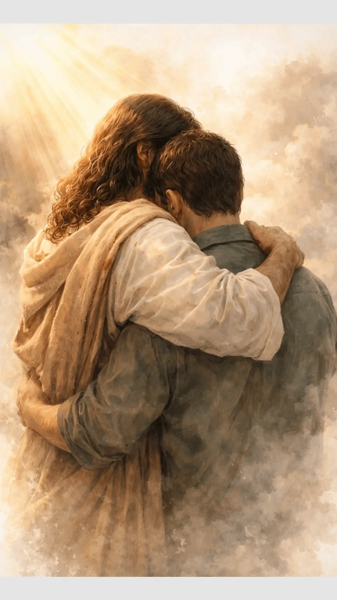

Nosso blogger

O nosso blogger nasceu de um desejo simples e ao mesmo tempo profundo: falar sobre Jesus Cristo de forma viva, sincera e transformadora. Cada postagem é fruto de inspiração, de momentos de reflexão, de experiências pessoais com Deus e de tudo aquilo que Ele desperta em nossos corações. Não criamos este espaço apenas para publicar textos; criamos para conectar pessoas ao amor, à verdade e à presença de Jesus. Vivemos em um mundo cheio de ruídos, distrações e pressões. Em meio a tudo isso, acreditamos que a mensagem de Cristo continua sendo a resposta que transforma vidas, cura feridas e reacende a esperança. Por isso, nosso blogger é um lugar onde cada palavra busca apontar para Ele — não para nós. Aqui, Jesus é o centro, o motivo e o destino. Além das nossas próprias inspirações, abrimos este espaço para que outras pessoas também compartilhem aquilo que Deus tem colocado em seus corações. Sabemos que o Espírito Santo fala de maneiras diferentes com cada pessoa, e quando reunimos essas vozes, criamos uma comunidade que cresce, aprende e se fortalece junta. O que Deus faz em uma vida pode edificar muitas outras, e é exatamente isso que queremos promover. Nossa tarefa é clara: conectar pessoas a Jesus Cristo. Não através de discursos complicados, mas por meio de palavras sinceras, testemunhos reais, reflexões profundas e mensagens que apontam para o Evangelho. Queremos que cada visitante encontre aqui um lugar de paz, de acolhimento e de encontro com Deus. Que cada texto seja uma semente. Que cada inspiração seja uma ponte. Que cada compartilhamento seja uma oportunidade de alguém sentir o toque de Cristo. Este blogger é mais do que um site — é um ministério. É um espaço onde fé e vida se encontram, onde histórias se transformam em esperança, onde a Palavra de Deus ganha forma em textos que alcançam corações. E enquanto Jesus continuar nos inspirando, continuaremos escrevendo, compartilhando e convidando outros a fazer o mesmo. Porque no fim, tudo o que fazemos aqui tem um único objetivo: levar mais pessoas a conhecer, amar e caminhar com Jesus Cristo.